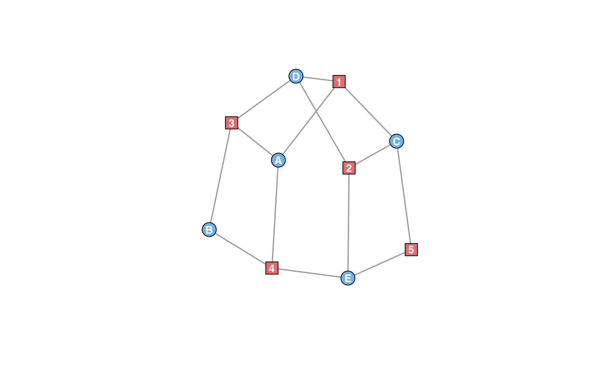
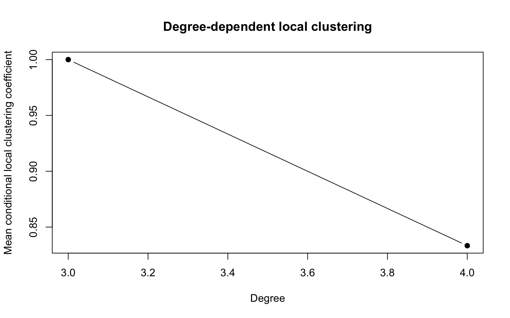
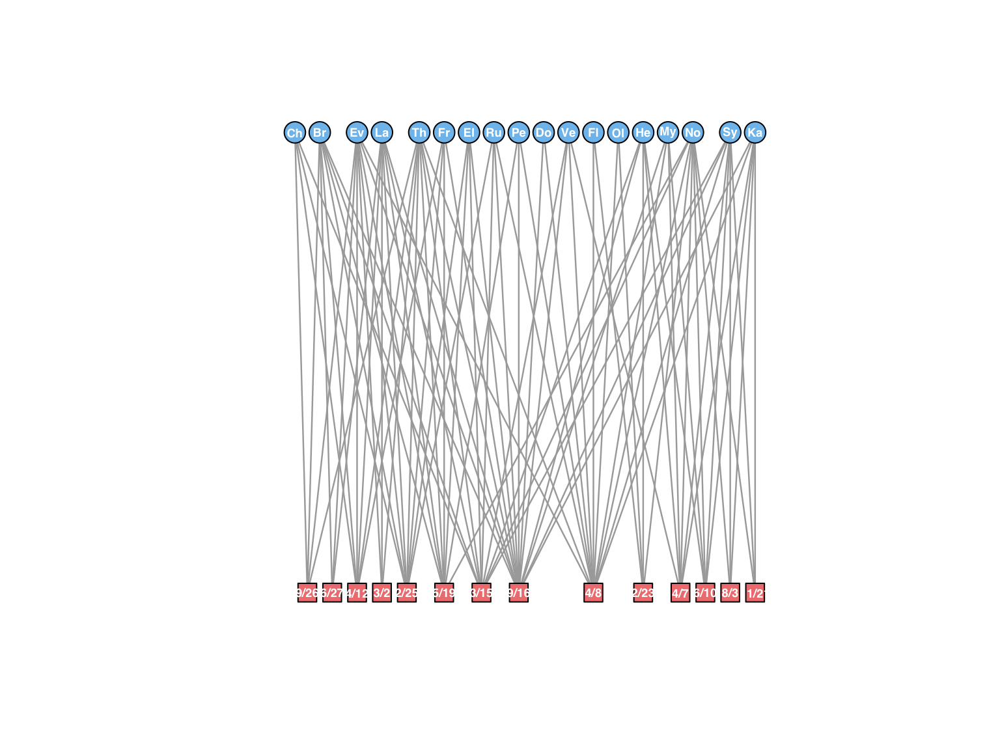
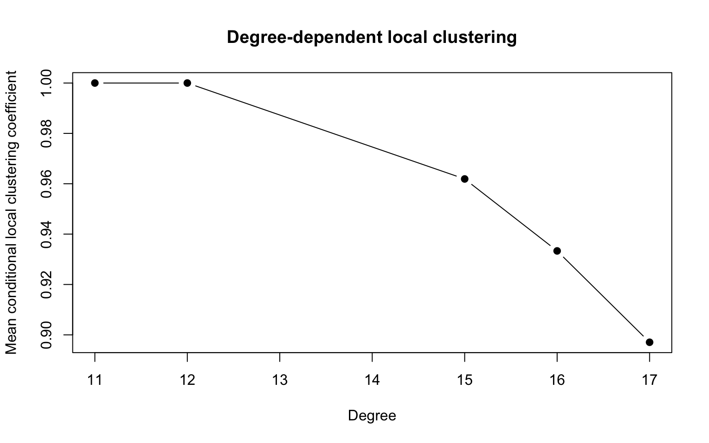
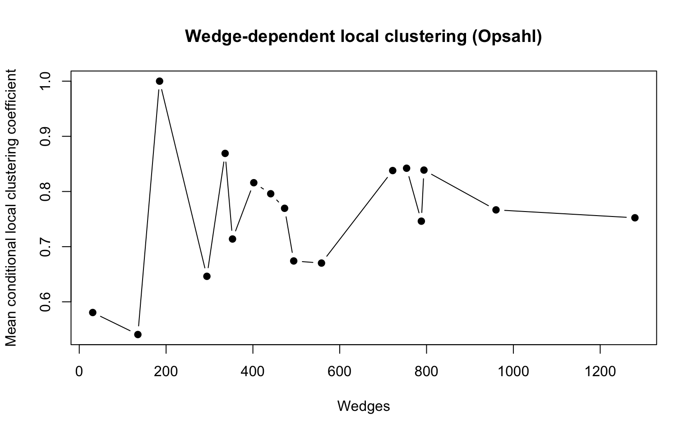
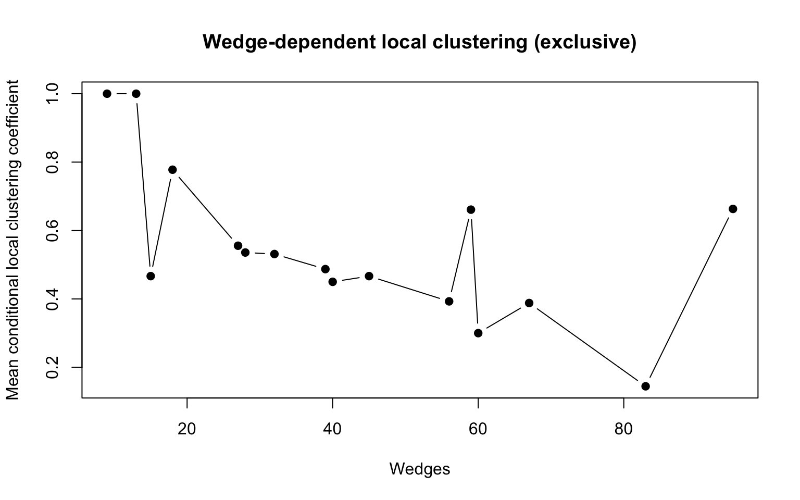

This vignette uses several tools from the bitriad package, which depends on igraph, to study two small social networks inferred from event coattendence.
library(bitriad)In their book Deep South (1941), five social anthropologists presented a comprehensive case study of the American racial caste system as it operated in a rural town in Mississippi. Among the data they collected were several tables of attendance at various events by individual subjects. Three of these tables are presented in the book. One, labeled Clique A (p. 209, Fig. 11), consists of five women, designated “Miss A” through “Miss E”, and five activities, described as bridge, dinner, movies, dance, and visiting, some subset of the women participated in each of which. The attendance records serve as the (not necessarily symmetric) incidence matrix for the igraph object women_clique:
data(women_clique)
as_incidence_matrix(women_clique)## Bridge Dinner Movies Dance Visiting
## Miss A 1 0 1 1 0
## Miss B 0 0 1 1 0
## Miss C 1 1 0 0 1
## Miss D 1 1 1 0 0
## Miss E 0 1 0 1 1The igraph package recognizes graph objects as bipartite if their nodes have a logical type attribute that distinguishes the two modes (actors and events in the affiliation network setting). Because several routines in bitriad depend on a graph being truly bipartite–that is, on having links exclusively between actors and events–the function is_an() verifies this thoroughly. By convention, the actors are assumed to be the nodes of type attribute FALSE, which correspond to the rows of the incidence matrix, and the events those of type TRUE.
The function prettify_an() assigns an affiliation network aesthetic attributes that help visually distinguish actors from events. It scales vertex sizes with the reciprocal of the vertex count (up to 100), and it adopts shape and color conventions common in recent scientific articles. Below is a visualization of the southern women dataset:

The layout reveals a symmetry between the actors and the events: Exchanging Miss A and Event 2, Miss B and Event 5, and so on yields a graph automorphism (an isomorphism with itself). Thus any structural information we learn about the actors in this network can be flipped into equivalent information about the events. Such symmetry is not necessarily meaningful, but the duality between actors and events, which allows us to use actor-centric tools in the study of events (and vice-versa), is of central importance to the study of affiliation networks.
This social network is just large enough to contain a diversity of triads and just small enough for us to examine them all in detail. Classically, the triad census of Davis and Leinhardt (1972) refers to the distribution of triads of 16 isomorphism classes throughout a directed, unipartite network. The women’s clique is neither, but we can view a simplified (undirected) version of the triad census on its projection–the network of five women with acquaintanceship ties inferred from their shared activities. There are only four isomorphism classes of undirected triads, indexed by the number of edges (0 through 3) among the three nodes:
women_clique_proj <- actor_projection(women_clique)
(tc <- triad_census(women_clique_proj))## 0 1 2 3
## 0 0 3 7There are no null (no edges) or disconnected (one edge) triples among the women, only three partially connected (two edges) and seven fully connected (three edges). But these categories, especially the last, ignore higher-order structure in the original affiliation network. The higher-order structure of interest consists of three actors at a time and any events from which connections among them; this is the basis for the (full) affiliation network triad census. Given an affiliation network, this census tallies all triples of actors by the number of “inclusive” events they all three attended and the distribution among them of “exclusive” events only attended by two.
(antc <- triad_census(women_clique))## 0 1
## (0,0,0) 0 0
## (1,0,0) 0 1
## (1,1,0) 0 3
## (1,1,1) 1 0
## (2,0,0) 0 0
## (2,1,0) 3 0
## (2,1,1) 2 0
## (2,2,0) 0 0
## (2,2,1) 0 0
## (2,2,2) 0 0The arrangement is not so intuitive. The rows reflect the distribution of exclusive events, and the columns indicate the number of inclusive events; for instance, Miss A and Miss B attended two events (movies and dance) without Miss C, and Miss A and Miss C attended one event (bridge) without Miss B, while Miss B and Miss C attended no events together. The exclusive events thus form the sequence \((2,1,0)\) (in decreasing order), so the triad \((A,B,C)\) is counted in the sixth row and first column (zero inclusive events) of the matrix. (The appropriate row is the index of \((2\leq 1\leq 0)\) in the enumeration scheme provided by the revolving door algorithm.)
As networks grow, this scheme quickly becomes ridiculous. There are, however, intermediate schemes that capture valuable information that is lost to the simple census. Consider the binary triad census, which collapses duplicate events and replaces the counts above with binary indicators of the existence of each type of event:
antc_proj <- project_census(antc)
antc_proj$binary## 0 1
## 0 0 0
## 1 0 1
## 2 3 3
## 3 3 0The column indicates the existence of an inclusive event; the row indicates the number of pairs of actors that share an exclusive event (0, 1, 2, or 3). The simple triad census can be recovered from both of these higher-order censuses:
cbind(tc, antc_proj$simple, project_census(antc_proj$binary)$simple)## tc
## 0 0 0 0
## 1 0 0 0
## 2 3 3 3
## 3 7 7 7The “classical” global clustering coefficient (Watts & Strogatz, 1998) may be defined for a traditional network (not an affiliation network) as the proportion of “wedges” that are “closed”–alternately, the proportion of connected triples whose end nodes are also tied. Every triad of three edges counts thrice as a closed wedge, while every two-edged triad constitutes a single open wedge. We can therefore compute a clustering coefficient from a simple triad census:
(C <- unname(3 * tc[4]/(tc[3] + 3 * tc[4])))## [1] 0.875The value tells us what proportion of the time two coattendees with the same third attendee were themselves at an activity together. The clustering coefficient has been widely used as a measure of triadic closure–the tendency for shared connections to lead to direct connections, or for “friends of friends” to in fact be (or become) “friends”.
The paper accompanying this package (Brunson, 2015) discusses in detail two alternative measures specifically designed for affiliation networks. The first measure of triadic closure specific to affiliation networks, ignoring previous bipartite clustering coefficients that were not based on triples of actors, was proposed by Opsahl (2013). The second is dubbed the exclusive clustering coefficient because it depends only on the exclusive events any triad. Both of these diagnostics are recoverable from the full triad census:1
(C_vec <- c(C = triad_closure_from_census(antc, scheme = "full", measure = "classical"),
OpsahlC = triad_closure_from_census(antc, scheme = "full", measure = "opsahl"),
exclC = triad_closure_from_census(antc, scheme = "full", measure = "exclusive")))## C OpsahlC exclC
## 0.8750000 0.6111111 0.6000000The exclusive clustering coefficient can also be calculated from the binary census, since its definition does not depend on the presence of duplicate events:
stc <- antc_proj$binary
3 * sum(stc[4, ])/(sum(stc[3, ]) + 3 * sum(stc[4, ]))## [1] 0.6Another family of measures proposed by Liebig and Rao (2014) are partially implemented in bitriad, but will not be discussed here. See help(triad_closure) for details.
So far we have only measured triadic closure network-wide; that is, we have been looking at global properties. But triadic analysis has always taken place at the interface between micro and macro. The Davis/Holland/Leinhardt studies used theoretical micro assumptions to predict empirically testable macro structure, and the global clustering coefficient was a macro counterpart to the original (local) clustering coefficient of Watts and Strogatz. Having viewed the southern women through this global lens, we now turn to the local.
The classical local clustering coeffiicent is the proportion of pairs of an actor’s neighbors who are themselves neighbors. From the image above we can see that the only pair of women not linked through at least one event are Miss B and Miss C. This means that the only local clustering coefficients we’ll observe are \(\frac{5}{6}\) (for women who count Mss. B and C among their neighobrs, i.e. everyone except Mss. B and C) and \(1\) (for Mss. B and C):
C_local <- transitivity(women_clique_proj, type = "local")
names(C_local) <- V(women_clique_proj)$name
C_local## Miss A Miss B Miss C Miss D Miss E
## 0.8333333 1.0000000 1.0000000 0.8333333 0.8333333Our higher-order measures (Opsahl and exclusive) are implemented using triad_closure(), a shell for the required “wedge” function that counts the open and closed wedges at an actor node. It is this function that determines the measure of triadic closure to be calculated. Once the wedges are tallied, triad_closure(), and the triad_closure_*() functions that pass arguments to it, compute from them the desired summary statistic. For example, here are the “exclusive” wedges among the five women:
(exclWedges <- triad_closure_exclusive(women_clique, type = "raw"))## wedges closed
## Miss A 4 2
## Miss B 1 1
## Miss C 2 1
## Miss D 4 2
## Miss E 4 3From these, the global and local exclusive clustering coefficiencs may be recovered:
sum(exclWedges[, 2])/sum(exclWedges[, 1]) # global## [1] 0.6exclWedges[, 2]/exclWedges[, 1] # local## Miss A Miss B Miss C Miss D Miss E
## 0.50 1.00 0.50 0.50 0.75(Note the absence of multiplication by 3 in the global calculation; each triangle contributes 3 closed wedges to exclWedges.) The three local clustering coefficients provide an illustrative comparison:
C_local_dat <- cbind(C = C_local, OpsahlC = triad_closure_opsahl(women_clique,
type = "local"), exclC = triad_closure_exclusive(women_clique, type = "local"))
rownames(C_local_dat) <- V(women_clique_proj)$name
C_local_dat## C OpsahlC exclC
## Miss A 0.8333333 0.5000000 0.50
## Miss B 1.0000000 0.6666667 1.00
## Miss C 1.0000000 0.6666667 0.50
## Miss D 0.8333333 0.6000000 0.50
## Miss E 0.8333333 0.7142857 0.75See the accompanying paper for a discussion of these evaluations.
One thoroughly documented property of social networks is the inverse relationship between local connectivity and local triad closure Briefly, actors that are directly connected to more other actors tend to have smaller clustering coefficients. This is to be expected from the fact that the number of possible links among a set of actors (in this case, the neighbors of an index actor) increases quadratically with the number of actors in the set, so a network with more or less constant density should have smaller local triad closure for actors with more neighbors.
Here’s the relationship between connectivity and triad closure in Clique A:
ddc <- data.frame(k = degree(women_clique_proj), C = transitivity(women_clique_proj,
type = "local"))
print(ddc)## k C
## Miss A 4 0.8333333
## Miss B 3 1.0000000
## Miss C 3 1.0000000
## Miss D 4 0.8333333
## Miss E 4 0.8333333plot(aggregate(ddc$C, by = list(ddc$k), FUN = mean), pch = 19, type = "b", main = "Degree-dependent local clustering",
xlab = "Degree", ylab = "Mean conditional local clustering coefficient")
There is little insight to be gleaned here, though the curve at least proceeds in the expected direction. To discern any signal, we require a more heterogeneous network. Conveniently, the same research team recorded another table of women and events, labeled Group I (p. 148), which is included in bitriad as the dataset women_group.2 To visualize this network, we’ll use the bipartite layout:
data(women_group)
women_group <- prettify_an(women_group)
V(women_group)$label <- substr(V(women_group)$name, 1, ifelse(V(women_group)$type,
5, 2))
V(women_group)$label.color <- "white"
set.seed(2)
plot(women_group, layout = layout_as_bipartite(women_group))
As hoped, the women of Group I exhibit a range of local connectivity and triad closure:
women_group_proj <- actor_projection(women_group)
(ddc2 <- data.frame(k = degree(women_group_proj), C = transitivity(women_group_proj,
type = "local")))## k C
## Evelyn 17 0.8970588
## Laura 15 0.9619048
## Theresa 17 0.8970588
## Brenda 15 0.9619048
## Charlotte 11 1.0000000
## Frances 15 0.9619048
## Eleanor 15 0.9619048
## Pearl 16 0.9333333
## Ruth 17 0.8970588
## Verne 17 0.8970588
## Myra 16 0.9333333
## Katherine 16 0.9333333
## Sylvia 17 0.8970588
## Nora 17 0.8970588
## Helen 17 0.8970588
## Dorothy 16 0.9333333
## Olivia 12 1.0000000
## Flora 12 1.0000000plot(aggregate(ddc2$C, by = list(k = ddc2$k), FUN = mean), pch = 19, type = "b",
main = "Degree-dependent local clustering", xlab = "Degree", ylab = "Mean conditional local clustering coefficient")
There is also an inverse relationship between the number of a woman’s acquaintances and the proportion of them that are also acquainted.
This distribution can be fruitfully generalized to the two-mode setting. What’s needed a suitable analog of degree–that is, a measure of local connectivity on which triad closue can be meaningfully conditioned. As suggested by the discussion above, we can adopt local wedge counts, which the triad_closure_*() functions return when neither type (local or global) is specified. Here are the wedge-dependent means and distributions using the Opsahl clustering coefficient:
women_group_wedges <- triad_closure_opsahl(women_group, type = "raw")
women_group_wedges <- cbind(women_group_wedges, women_group_wedges[, 2]/women_group_wedges[,
1])
plot(aggregate(women_group_wedges[, 3], by = list(women_group_wedges[, 1]),
FUN = mean), pch = 19, type = "b", main = "Wedge-dependent local clustering (Opsahl)",
xlab = "Wedges", ylab = "Mean conditional local clustering coefficient")
This plot defies the behavior we saw in the classical case; triad closure neither grows nor declines with connectivity. Here is the analogous relationship for exclusive clustering:
women_group_wedges <- triad_closure_exclusive(women_group, type = "raw")
women_group_wedges <- cbind(women_group_wedges, C = women_group_wedges[, 2]/women_group_wedges[,
1])
plot(aggregate(women_group_wedges[, 3], by = list(women_group_wedges[, 1]),
FUN = mean), pch = 19, type = "b", main = "Wedge-dependent local clustering (exclusive)",
xlab = "Wedges", ylab = "Mean conditional local clustering coefficient")
This plot mimics the classical behavior. In the classical case we expect local clustering coefficients to be quite large in tight-knit networks such as those produced for sociological analysis of cliques and communities; the exclusive clustering coefficient, in contrast, takes nearly the full range of possible values, providing a more descriptive metric for dense affiliation networks like Group I. For a more thorough comparison, see the accompanying paper.
The shell function triad_closure_from_census() also passes to implementations that handle difference, binary, and simple census input, provided the desired measure of triad closure can be recovered therefrom.↩
These data are available from several sources, though one error (the substitution of MYRNA for MYRA) crept into an early digitization and has been widely copied since. Moreover, to my knowledge, no other digitizations include the date information from the original table.↩